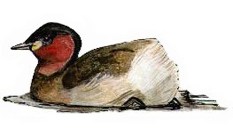
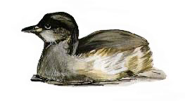

Little Grebe
A once common sight at the reservoir with up to 5 pairs breeding in the 60's. With much less vegetation in the water this birds sadly breeds no more but is still regularly seen, particularly in winter.

21/03/35 - 'Several' birds
14/07/35 - 'Some' with young
25/03/36 - Single bird
No records between 1937 & 1939
25/03/40 - 3 birds, chasing each other
No records between 1941 & 1953
1955 - Pair bred. 1st breeding pair for 'several' years
1956 - Pair bred
29/09/57 - Maximum count of 16 birds
1958 - Bred
1959 - Bred
14/09/59 - Maximum count of 19 birds
1960 - At least 5 pairs bred
1961 - Bred
1964 - Infrequently noted but no evidence of nesting
1965 - Pair bred
1966 - 5 pairs bred
1968 - Maximum count of 8 bird
09/06/71 - Nest & eggs
27/07/72 - 2 juveniles
29/12/73 - 2 birds
1975 - Bred
1976 - Pair bred
1977 - Sightings of a breeding pair & 2 young birds
1978 - 2 'families'
1979 - Bred
1981 - 2 pairs noted
30/07/83 - 4 birds, including 3 young, at nest
1984 - Pair bred successfull
16/06/84 - 6 birds including juveniles
19/08/85 - 6 birds (probably family party)
??/04/86 - Heard calling
??/04/87 - Pair

1988 - Pair raised a single young bird
1994 - 2 birds seen in the 2nd winter period
??/11/96 - 2 birds
29/10/97 - 2 birds
08/11/97 - Single bird
14/09/98 - Single bird. 2 birds were seen on 18/09
02/10/98 - 2 birds
??/11/98 - Single bird
10/01/99 - Single bird
20/03/99 - 2 birds
15/04/99 - Single bird
15/10/99 - Single bird. Seen again on 19/10. 2 birds present on 21/10 & 3 on 28/10
12/11/99 - 5 birds
13/12/99 - Single bird. 3 were present throughout the month
2000 - Single on 26/07 then singles throughout September and a single on 21/10
2001 - Singles seen each month from July to November
2002 - Single on 10/04 then singles on at least one day each month from August to December
2003 - Single on 16/03 then singles on several dates in October and November
2004 - Pair on 02/03 with other single records during the month. Singles in August, October and November
2005 - Singles in August, October, November and December
2006 - Singles on 22/07 and 12/10
2007 - Singles in September, October and December with 3 on 31/10
2008 - Recorded on 13 dates with 1 seen on many August and September dates that may have been a bird that was released after being in care. 7 were recorded on 22/07/08 though these were present just for 1 day
2009 - Recorded on 21 dates with ones or twos. None in the months March to July
2010 - Recorded on 9 dates. All singles spread through the year but not in April/May/June
2011 - Recorded on 14 dates through the year, all singles apart from 2 on 26/03
2012 - Recorded on 15 dates through the year, all singles
2013 - Recorded on 12 dates. Singles apart from 3 on 12/12. One on 25/08 was seen to be ringed with a standard BTO ring
2014 - Recorded on 7 dates. Singles apart from 2 on 13/09. One seen on 7/07 and 9/07 was a juvenile
2015 - Recorded on 7 dates. All singles with one on 5&6/07 being a juvenile
2016 - Recorded on 8 dates. Ones or twos
2017 - Recorded on 17 dates. Ones or twos
2018 - Recorded on 46 dates. Max of 4 birds on 07/03. Up to 3 regularly in December. This is the best year for them here since 1999
2019 - Recorded on 56 dates. 1-3 birds. Increasingly regular in the last few years
2020 - Recorded on 33 dates with one or two birds
2021 - Recorded on 12 dates in winter. All singles apart from 3 birds on 22/11 when cold weather brought these in along with 3 Goosanders, 3 Goldeneye and 3 Wigeon, all of which were gone the next day
2022 - Recorded on 12 dates with a maximum of 3 birds
2023 - Recorded on just 4 dates in January, April and November, all singles.
2024 - Recorded on 10 dates from March to September. All single birds, some adults, some immature birds
2025 - Recorded on 10 dates in June, August, Novenber and December. All single birds